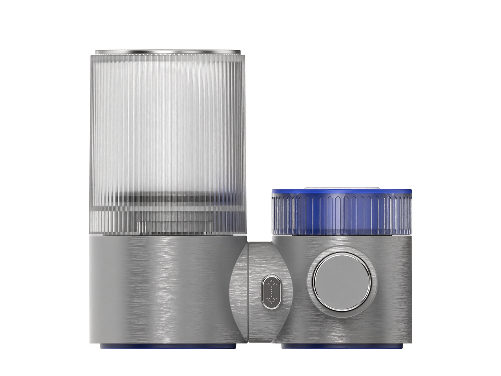

الصنبور
الصنبورRP-F01
فلتر صنبور كلاسيكي
SKU: RP-F01
MOQ: يُؤكَّد عند الاستفسار
الرئيسية/المنتجات/فلاتر الصنبور/ RP-F02

فلاتر الصنبور
فلتر صنبور دوار 360° (SG-LT-18) — سبعة طرز. RP-F02 يقود العائلة.
RP-F02 وRP-F03 وRP-F04 وRP-F05 هي الطرز الأربعة الأولى من فلتر الصنبور نفسه، وتشترك في هيكل ABS والشكل نفسه. وتختلف في زاوية الدوران وLED التوربين وقلب الصمام والتبديل: RP-F02 — دوران 360°، سيراميك + GAC / CTO / UF + GAC؛ RP-F03 — يضيف حلقة ضوء أزرق LED بتوربين يعمل بالماء، سيراميك + GAC / CTO؛ RP-F04 — دوران 270°، قلب صمام سيراميك، LED توربين (SG-LT-27)؛ RP-F05 — قلب صمام سيراميك، تبديل بزر PUSH. وتنضم إلى العائلة ثلاثة طرز أخرى: منقي صنبور بكبسولة بيضاء (ترشيح بخمس مراحل، وحدة واحدة + 4 خراطيش، 145.7 × 66 × 67 مم)، وطراز ذهبي بهيكل نحيف مع ضوء أزرق، وطراز ستانلس ستيل مع نافذة عرض شفافة (2.5 لتر/دقيقة، حجم اسمي للمياه المنقاة 2000 لتر، 144 × 114 × 59 مم). تُؤكد المواصفات لكل موديل وطلب.
خيارات الضبط والتشطيب مؤكدة حسب الطلب.
الجهد / التردد قابل للتكوين حسب بلد الوجهة. تُؤكد التكوينات الأخرى لكل طلب.
RP-F02 هي عائلة فلاتر صنبور تُركب على صنبور المطبخ وترشح الماء عند نقطة الاستخدام. تشترك سبعة طرز في الفكرة نفسها وتختلف في الدوران والخرطوشة والصمام والتبديل، بحيث يمكن للعلامة التجارية تقديم مجموعة صغيرة من عائلة واحدة. ويقدم الطراز القياسي خراطيش سيراميك + GAC وCTO وUF + GAC، وتضم العائلة أيضاً طراز كبسولة بخمس مراحل وطراز ستانلس ستيل مع نافذة عرض شفافة. وهي مصنوعة لأصحاب العلامات التجارية الذين يريدون مجموعة فلاتر صنبور يسهل وضعها في خط مطبخ.
ما الحد الأدنى لكمية الطلب؟
الطلب الأول 200 وحدة لكل موديل، وإعادة الطلب 500 وحدة.
هل يمكنني طلب عينة قبل طلب بالجملة؟
نعم. العينات جاهزة خلال 15 يومًا، وتُسترد رسوم العينة عند أول طلب بالجملة. تستغرق الطلبات بالجملة 40 يومًا بعد اعتماد العينة وتُشحن FOB Shenzhen.
أي طراز يجب أن أطلب؟
اطلب باسم RP-F02 وحدد الطراز: قياسي 360° أو LED توربين أو صمام سيراميك 270° أو زر PUSH أو كبسولة بيضاء أو ذهبي نحيف أو نافذة ستانلس ستيل.
سبعة طرز — اطلب باسم RP-F02 وحدد الطراز (قياسي 360° أو LED توربين أو صمام سيراميك 270° أو زر PUSH أو كبسولة بيضاء أو ذهبي نحيف أو نافذة ستانلس ستيل).
مرّر فوق صورة متغير لرؤية مواصفاته. على الشاشات اللمسية، انقر على صورة.





طراز سابع — هيكل نحيف، تشطيب ذهبي مع ضوء أزرق — مدرج في جدول المقارنة أدناه. لا تتوفر بعد صورة منتج نظيفة، لذا لا تُعرض صورة هنا.
مواصفات كاملة لكل طراز، جنباً إلى جنب. جدول المواصفات أدناه يعرض قيم RP-F02.
| المواصفة | RP-F02-1 — قياسي 360° (SG-LT-18) | RP-F02-2 — LED توربين (SG-LT-18F) | RP-F02-3 — صمام سيراميك 270° (SG-LT-27) | RP-F02-4 — زر PUSH (SG-LT-18A) | RP-F02-5 — طراز الكبسولة البيضاء (MJLTJSQDB01) | RP-F02-6 — ذهبي نحيف (SG-LT-18F) | RP-F02-7 — طراز ستانلس ستيل مع نافذة (SG-LT-17B) |
|---|---|---|---|---|---|---|---|
| الهيكل | ABS | ABS | ABS | ABS | يُؤكد حسب الطلب | ABS | فولاذ مقاوم للصدأ |
| خيارات الخرطوشة | سيراميك + GAC / CTO / UF + GAC | سيراميك + GAC / CTO | سيراميك + GAC / CTO | سيراميك + GAC / CTO / UF + GAC | ترشيح من 5 مراحل، وحدة واحدة + 4 خراطيش؛ قيمة اليود للكربون المنشط ≥1000 mg/g | سيراميك + GAC / CTO / UF + GAC | سيراميك + GAC / CTO / UF + GAC؛ ترشيح بسبع طبقات |
| الضبط | دوران 360° | دوران 360° | دوران 270° | يُؤكد حسب الطلب | يُؤكد حسب الطلب | دوران 360° | يُؤكد حسب الطلب |
| خيار LED | — | LED بتوربين يعمل بالماء | LED بتوربين يعمل بالماء | — | — | ضوء أزرق (كما هو موضح في الكتالوج) | — |
| قلب الصمام | يُؤكد حسب الطلب | يُؤكد حسب الطلب | سيراميك | سيراميك | يُؤكد حسب الطلب | يُؤكد حسب الطلب | يُؤكد حسب الطلب |
| التبديل | رافعة | رافعة | رافعة | زر PUSH | يُؤكد حسب الطلب | يُؤكد حسب الطلب | رافعة (وضعا الماء الخام / المنقى) |
| مصدر المياه | مياه صنبور بلدية | مياه صنبور بلدية | مياه صنبور بلدية | مياه صنبور بلدية | مياه صنبور بلدية | مياه صنبور بلدية | مياه صنبور بلدية |
| تدفق الماء النقي | يُؤكد حسب الطلب | يُؤكد حسب الطلب | يُؤكد حسب الطلب | يُؤكد حسب الطلب | يُؤكد حسب الطلب | يُؤكد حسب الطلب | 2.5 L/min |
| الحجم المقنن للمياه المنقاة | يُؤكد حسب الطلب | يُؤكد حسب الطلب | يُؤكد حسب الطلب | يُؤكد حسب الطلب | يُؤكد حسب الطلب | يُؤكد حسب الطلب | 2000 L |
| الأبعاد | يُؤكد حسب الطلب | يُؤكد حسب الطلب | يُؤكد حسب الطلب | يُؤكد حسب الطلب | 145.7 × 66 × 67 mm | يُؤكد حسب الطلب | 144 × 114 × 59 mm |
| ضغط العمل | يُؤكد حسب الطلب | يُؤكد حسب الطلب | يُؤكد حسب الطلب | يُؤكد حسب الطلب | 0.1–0.4 MPa | يُؤكد حسب الطلب | 0.1–0.4 MPa |
| درجة حرارة الماء | يُؤكد حسب الطلب | يُؤكد حسب الطلب | يُؤكد حسب الطلب | يُؤكد حسب الطلب | 5–38°C | يُؤكد حسب الطلب | 5–38°C |
8 صفوف مواصفات من كتالوج ROPureOEM.
| الهيكل | ABS |
|---|---|
| خيارات الخرطوشة | سيراميك + GAC / CTO / UF + GAC |
| الضبط | دوران 360° |
| مصدر المياه | مياه صنبور بلدية |
| التدفق الاسمي / السعة | يُؤكد حسب الطلب |
| دقة الترشيح | يُؤكد حسب الطلب |
| الضغط / درجة الحرارة | يُؤكد حسب الطلب |
| عمر الخرطوشة / الأبعاد | يُؤكد حسب الطلب |
المواصفات مأخوذة من كتالوج ROPureOEM. وعندما لا تكون القيمة مؤكدة بعد، تُدرج على أنها «مؤكدة لكل طلب» — ونحن لا ننشر أرقامًا غير مؤكدة.
الصنبورفلتر صنبور كلاسيكي
SKU: RP-F01
MOQ: يُؤكَّد عند الاستفسار
 الصنبور
الصنبورفلتر صنبور من ألياف الكربون
SKU: RP-F06
MOQ: يُؤكَّد عند الاستفسار
 الصنبور
الصنبورفلتر صنبور بشاشة عرض عمر الفلتر
SKU: RP-F08
MOQ: يُؤكَّد عند الاستفسار
 الصنبور
الصنبورفلتر مياه يُركَّب على الصنبور — مدمج
SKU: RP-F10
MOQ: يُؤكَّد عند الاستفسار